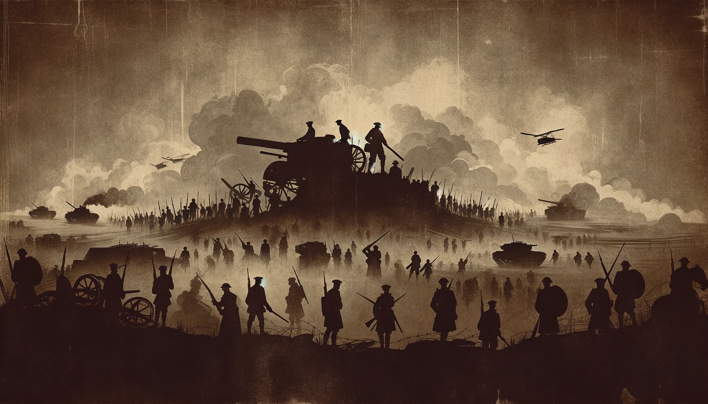

BIENVENIDOS A HISTORY OF WAR
En esta página web encontrarás información sobre la historia de algunas las guerras más importantes de la historia, así como información sobre las batallas más importantes, personajes destacados y una bibliografiía de libros recomendados dividos por categorías, que van en función de la época histórica a la que pertenecen. Además, disponemos de un mapa interactivo en el que podrás ver la ubicación de las batallas más importantes, en las cuales si clicas sobre ellas, te redirigirá a una página con información más detallada sobre la batalla en cuestión. Nuestro objetivo es que puedas aprender sobre la historia de una forma amena y entretenida, y que puedas disfrutar de la historia de una forma diferente, intentando distanciarnos de la forma tradicional de enseñar historia.